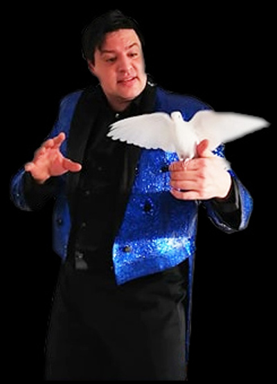
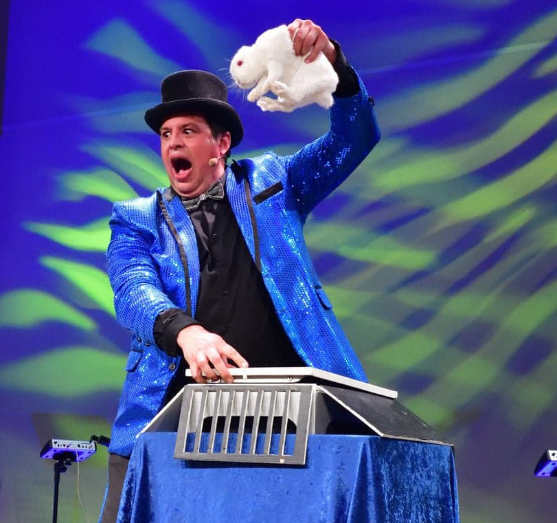
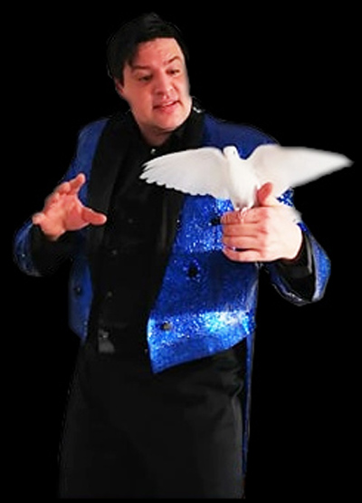
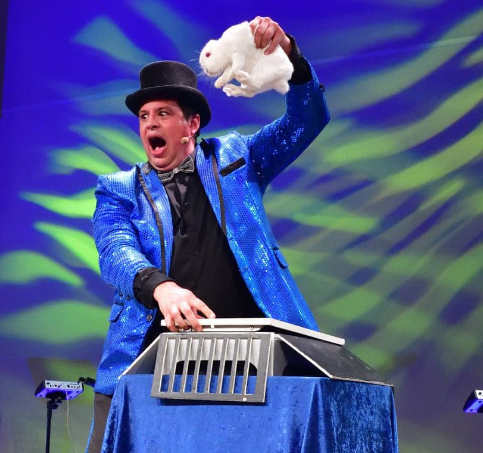

Telefon nmr +47 40834567
Bor du i Bergen eller omegn og skal feire bursdag, holde firmafest, lage til juletrefest eller andre barnearrangement Jeg har drevet med Sett prikken over i-en med et fortryllende barne- og familieshow.
Jeg har drevet med barneunderholdning siden 1994, da jeg som 14-åring vant min første lokale talentiade. Siden den gang er tryllingen blitt en del av meg, en livsstil som jeg aldri kan slutte med
Ballonggjøgling
Ballongbretting er en sikker suksess blant barna. Jeg kan lage over 50 forskjellige sorter ballongdyr, sverd, hatter, blomster etc. Jeg stiller i oppsiktsvekkende klovneklær og med et lite trylletriks i lommen. Fletter også inn en del ballong-gimmicks. Lager opp til 200 ballongdyr pr. time.
Sukkerspinnmaskin
Da jeg var liten var sukkerspinn noe av det beste og mest stemningsskapende jeg visste. Jeg har derfor anskaffet meg en meget produksjonseffektiv og solid maskin som jeg leier ut i kombinasjon med mine opptredener. Sukkerspinn er en original og populær erstatning for den tradisjonelle godteposen. Til større arrangementer, kan salg av sukkerspinn i forkant av min opptreden også være meget innbringende for arrangøren, og kan i praksis regnes som avslag i prisen for showet jeg leverer. Leveres komplett med maskin, rosa sukkermix, pinner og lynkurs i betjening.
 


